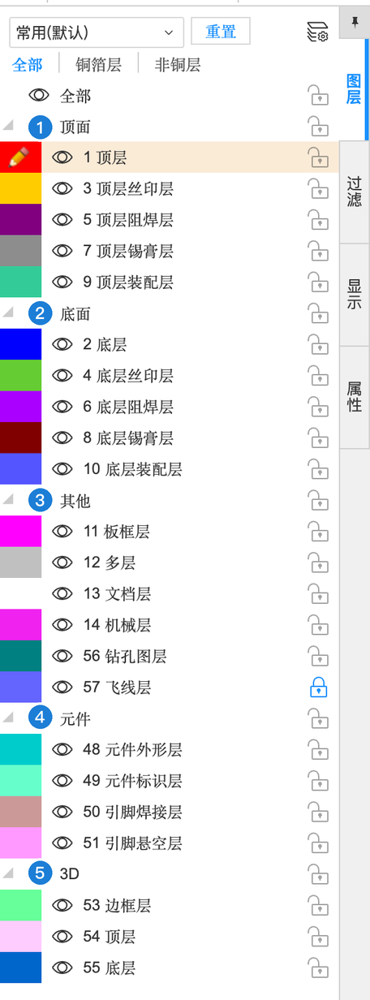
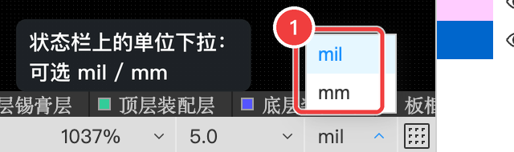
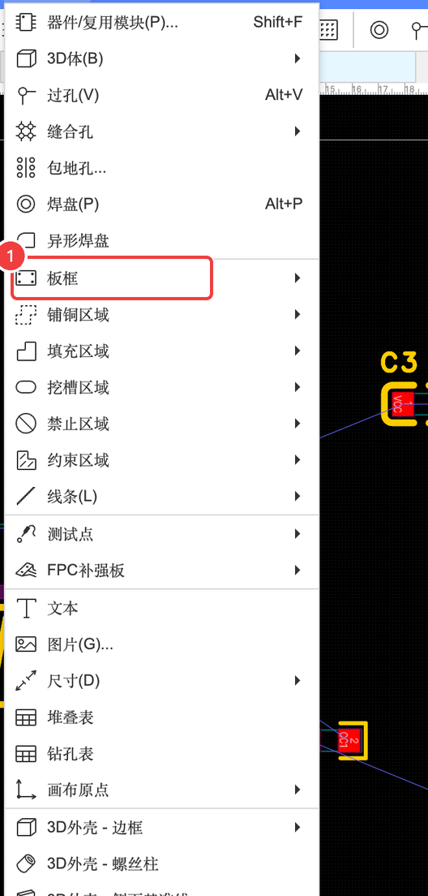
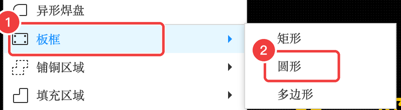
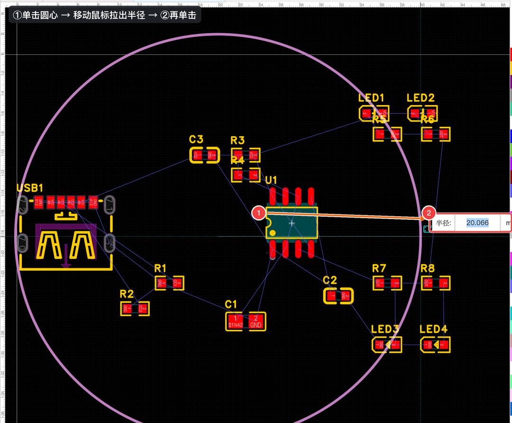
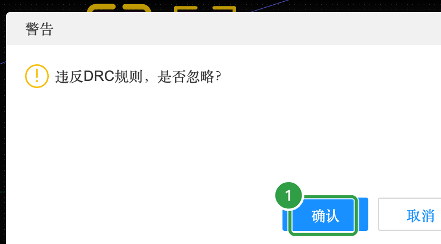
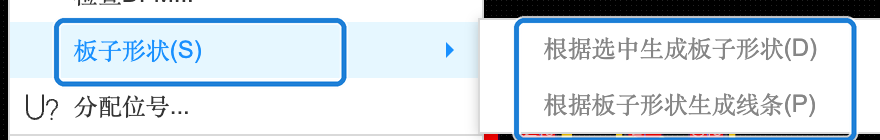

A-4 PCB：图层与板框
电路板是一层一层“叠”出来的：铜、绿油、白字……PCB 编辑器里的每个“图层”就对应其中一层。这一节先搞懂图层，再画出小徽章的圆形外框（板框）。
A4.1 电路板是一层一层叠起来的#
拿一块双面板从上往下“拆开”，一共是 7 层。点每一层看看它是什么、在编辑器里是几号图层：
A4.2 编辑器里的图层面板#
PCB 编辑器右侧的「图层」面板列出了所有图层，按五组排列（编号对应下图）：

| 编号 | 分组 | 包含的图层 |
|---|---|---|
| 1 | 顶面 | 1 顶层（铜）、3 顶层丝印层、5 顶层阻焊层、7 顶层锡膏层、9 顶层装配层 |
| 2 | 底面 | 2 底层（铜）、4 底层丝印层、6 底层阻焊层、8 底层锡膏层、10 底层装配层 |
| 3 | 其他 | 11 板框层、12 多层、13 文档层、14 机械层、56 钻孔图层、57 飞线层 |
| 4 | 元件 | 48 元件外形层、49 元件标识层、50 引脚焊接层、51 引脚悬空层（编辑器里的辅助显示） |
| 5 | 3D | 53 边框层、54 顶层、55 底层（3D 外壳用） |
- 每层前面的眼睛图标：显示 / 隐藏这一层，只是“看不看得见”，不影响生产。
- 点层名把它设为当前层：接下来放的导线、文字、铺铜会画在这一层上。
- 画布下面还有一条图层快捷栏，点「顶层」「底层」「顶层丝印层」……切换当前层更快：

A4.3 单位：把 mil 换成 mm#
PCB 默认单位是 mil。点状态栏右下角的单位，改成 mm（1.0 节讲过）：

以后看别人的资料、工厂的工艺参数，mil 和 mm 两种单位都会遇到，用这个小工具换算一下：
A4.4 画一个直径 40 mm 的圆形板框#
板框就是板子的外形轮廓，画在「11 板框层」上。工厂会沿着这条线把板子切下来——画成什么形状，板子就是什么形状。
- 点菜单「放置」，把鼠标移到「板框」上
- 在弹出的子菜单里点「圆形」


- 在画布上单击确定圆心
- 移动鼠标拉出半径（旁边会实时显示半径数值），差不多 20 mm 时再单击

如果圆压到了元件上，会弹出一个警告“违反DRC规则，是否忽略？”。这是因为元件现在还堆在板子边上，点「确认」忽略即可，下一步布局时会把元件都挪进板子里：

用属性面板把尺寸改精确#
手拖出来的半径不会正好是 20 mm（比如上图是 20.066 mm）。单击板框（圆线）选中它，右侧属性面板里直接输入数值：
圆形板框的属性
| 属性 | 含义（大白话） | 本例怎么填 | 什么时候需要改 |
|---|---|---|---|
| 线宽 | 板框线的粗细，只是显示用，工厂按线的中心切 | 0.254 mm（默认） | 不用改 |
| ID | 内部编号 | 自动 | — |
| 中心 X | 圆心的横坐标 | 20 mm | — |
| 中心 Y | 圆心的纵坐标（编辑器里往上是正、往下是负） | -20 mm | — |
| R | 半径。直径 = 2 × R | 20 mm（直径 40 mm） | 想做大一点 / 小一点的徽章时 |
A4.5 🎨 其他形状的板子#
